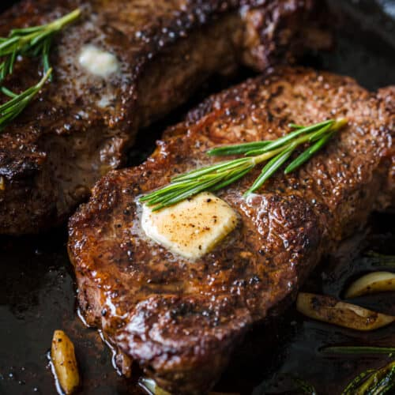

A Great Garlic Butter Steak Recipe

Description
Sometimes that sear is just perfect but the inside is nowhere to be cooked. So by the time the inside is cooked, your crusty exterior is basically, well, dead at this point.
So here it is - that juicy, crisp steak cooked just the way you want it, topped with a garlic compound butter that is off. the. hook.
Really.
Ingredients:
- 4 (12-ounce) rib-eye steaks, 1 1/4 inch thick at room temp
- 4 tablespoons olive oil
- Kosher salt and freshly ground black pepper, to taste
For the Garlic Butter Compound:
- 1/2 cup unsalted butter, at room temperature
- 1/2 cup chopped fresh parsley leaves
- 3 cloves garlic, minced
- Zest of 1 lemon
- 1 teaspoon thyme, chopped
- 1 teaspoon rosemary, chopped
- 1 teaspoon basil, chopped
- 1/2 teaspoon kosher salt
- 1/4 teaspoon ground black pepper
- Pinch of cayenne pepper
Steps
- To make the garlic compound butter, combine butter, parsley, garlic, lemon zest, thyme, rosemary, basil, salt, pepper and cayenne pepper in a medium bowl. Transfer mixture to parchment paper; shape into a log. Roll in parchment to 1 1/2 inches in diameter, twisting the ends to close. Refrigerate until ready to use, up to 1 week.
- Preheat oven to broil. Place an oven-proof skillet in the oven.
- Using paper towels, pat both sides of the steak dry. Drizzle with olive oil; season with salt and pepper, to taste. Remove skillet from the oven and heat over medium-high heat.
- Place the steak in the middle of the skillet and cook until a dark crust has formed, about 1 minute. Using tongs, flip, and cook for an additional 60 seconds.
- Place skillet into the oven and cook until desired doneness is reached, about 4-5 minutes for medium-rare, flipping once. Let rest for 3-5 minutes.
- Serve immediately with garlic compound butter.